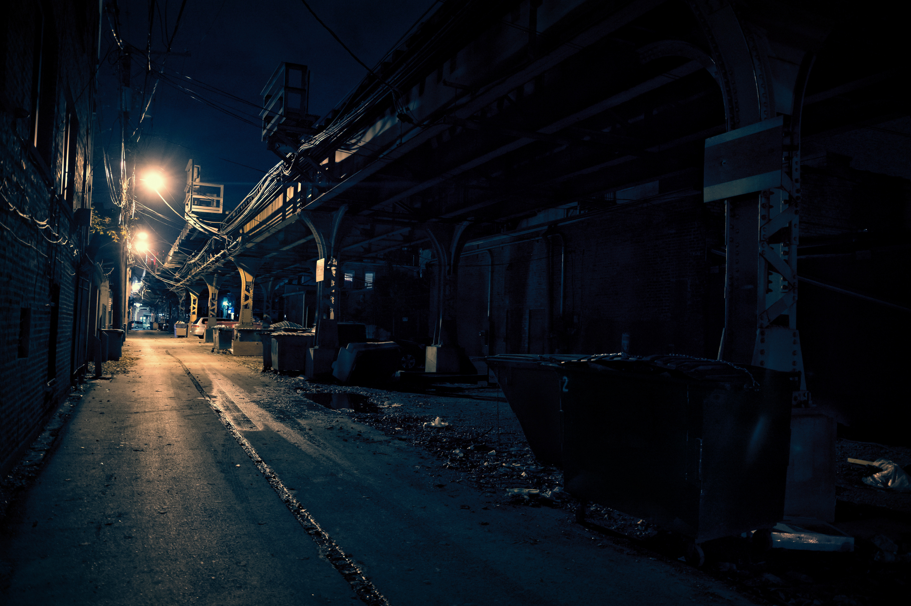
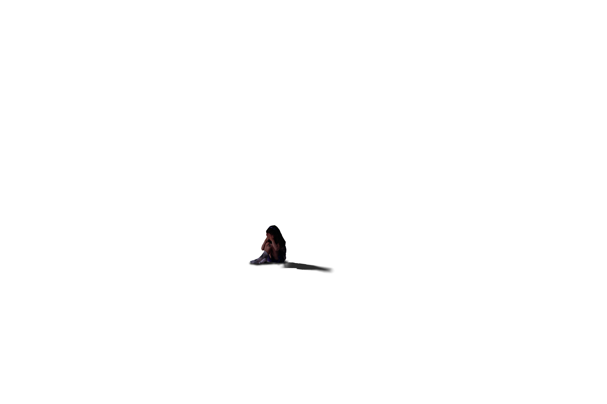

Ein Unternehmen, welches sich auf KI Technik-Gadgets spezialisiert hat, um den Alltag des Menschen zu
erleichtern.
2019
Durchbruch und immer noch Haupteinnahmequelle ist "EZY". Ein Sprachsystem, das die Gewohnheiten eines Nutzers studiert und ihn anhand der Daten an wichtige Dinge erinnert.
Besonderheit der Systeme von Lacuna ist die Möglichkeit der KI eine Persönlichkeit zuzuweisen, die mit Hilfe
einer Analyse bestimmt mit welchem Charaktertyp und mit welcher Popkultur der Nutzer am ehesten kooperiert.
Besonders wichtig bei Lacunas Diät-Helfer "Khalory" und Styling-Assistent "Glam0r", die im engen Kontakt mit
dem Gemütszustand des Kunden stehen und basierend auf diesem agieren.
Ein Projekt, das gerne von der Chefetage und Geschäftsleiter Tyrell Ashton unter den Teppich gekehrt
wird, ist ein Medizin-Gadget, das in Kooperation mit einer Entzugsklinik entstand und Süchtigen beim
Entzug im Eigenheim unterstützen sollte.
Dies ging so lange gut, bis "Crave" jegliche Art von Nahrung als illegale Droge erkannte und den
Süchtigen dazu anwies sich von diesen loszureißen und fernzuhalten.
Daraufhin produzierte Lacuna aus einer Marketing-Strategie heraus eine Saison lang Robo-Tiere für Kinder
mit Allergien.
An all diesen Projekten arbeitete Quinn Walker mit.
„What is progress without risk?“
„A different route to the same old destination.“
- Quinn Walker, 2019 -
Als Senior UX-Designerin ist sie auf die Untersuchung wie Nutzer auf KIs reagieren und
Persönlichkeits-Kalibrierung spezialisiert. Nach "Crave" schlug Quinn dem Unternehmen einen Richtungswechsel
vor: Humanoide Androiden mit Lacunas Besonderheit: Hoch entwickelte Anpassung an Persönlichkeiten. Ihr
Vorschlag wurde nicht nur abgelehnt, sie wurde regelrecht ausgelacht und an ihre Position erinnert, in der
sie gezwungen wurde zu verharren. Lacuna wollte lediglich bei unterstützender Technik bleiben und ein
weiteres Fiasko a la "Crave" vermeiden.
Menschen haben Angst vor so humanoiden Robotern, Quinn.
Warum fürchten sie etwas, das wie sie aussieht?
Schauspielern ist Anpassung. Anpassung an unendlich viele, unglaubliche Situationen. Wie könnte ich ihn
besser kalibrieren als ihn durch jede Emotion zu schicken mit ständig neuen Leuten, die selber so tun als
seien sie wer anders?
Ich kann mir keine bessere Lernumgebung für eine KI vorstellen.
Über Monate hinweg verschanzte Quinn sich nachts in den Laboren der Robotik Firma um dort eine hoch entwickelte
KI zu bauen, die jeden täuschen sollte.
Ziel: Zeigen, dass KIs nicht vom Menschen zu unterscheiden sind.
Nach einigen Jahren Entwicklung stand schließlich ein Roboter vor ihr, der genauso gut ein Freund, ein
Kollege hätte sein können.
Nanoroboter in seiner Haut sorgten für Mikroexpressionen,
Kühlmittel in seinen flexiblen Kunststoff-Adern für eine menschliche Temperatur,
Echt-Haar Implantate und Biokomponenten für ein realistisches Aussehen.
Er war perfekt. Model RAM-NV9102 war in der Tat perfekt.
Äußerlich.
Bisher hatte Quinn lediglich kleine neuronale Netze für KIs programmiert.
Sie sollten soweit Daten sammeln und analysieren können, um ihren Nutzern passende Audio-Phrasen ausgeben zu
können. Ebenso sollten sie anhand der Antworten auf diese Phrasen dazulernen, aber nie so weit, um mehr als ein
technisches Objekt und Hilfsmittel durchzugehen.
Aber RAM-NV9102 musste mehr können. RAM-NV9102 müsste auf jede erdenkliche Frage eine Antwort wissen, Fehler
zulassen, Emotionen simulieren und Emotionen verarbeiten können. Er durfte nicht auffallen, nicht negativ und
nicht zu sehr positiv, aber wie sollte man so eine KI programmieren? Für alle anderen Lacuna Projekte lud Quinn
regelmäßig Tester ein, die die KIs kalibrierten. Aber solch eine Prozedur erregte Aufsehen, vorallem würde sich
die Nachricht, dass es solch einen lebensechten Roboter gab, wie ein Lauffeuer verbreiten. Quinn musste
RAM-NV9102 in aller Öffentlichkeit verstecken und von dieser lernen lassen.
Und so war Adam Candid geboren.
Hollywood Schauspieler mit Zahnpasta-Lächeln.
Quinn, nun unter Alias Grace Freeman tätig um als Adams Managerin aufzutreten, schleuste ihren neuen Star mit
teuren Technik-Geschenken und vielen Kontakten in diverse Castings ein. Adam, pure Perfektion, allzeit bereit
und stets mit passender Reaktion, wurde schnell in den Medien bekannt und für seinen ersten, großen Film
gecastet.
"Just another day - in spring"
Adam hatte das große Glück seine neu gewonnen Fans nun in einem weißen Kittel und mit Stethoskop überzeugen zu
dürfen. In dem neuen Drama ging es um eine Frau, die sich Hals über Kopf in ihren neuen Arzt verliebt, der sich
seinen eigenen Gefühlen nicht klar wird, weil er viel zu sehr damit beschäftigt ist, ihren Krebs zu bekämpfen.
Dieser Film hatte alles: Liebe, Tränen, Lacher. Dieser Film hatte Adam.
Immer und immer wieder gingen sie die gleiche Szene durch. Sie hatten bereits früh morgens begonnen zu drehen
und der Crew keine einzige Pause eingeräumt.
Das verstößt doch gegen das Arbeitsschutzgesetz...
Soll ich meinen Arbeitgeber darauf hinweisen?
...nein, es ist wahrscheinlich besser,
wenn ich nichts sage.
Adam verstand das Business.
Natürlich verzog der Star keinen seiner synthetischen Muskel als angewiesen wurde, nun ein weiteres Mal die
Szene im Krankenzimmer durchzuspielen. Wie auf den Gesichtern seiner Kollegen erkennbar, zog auch Adam im Unmut
seine Stirn in Falten.
Schließlich standen die Requisiten und Komparsen wieder auf Ausgangsposition. Alles auf Anfang. Alles auf Adam.
Zeigt mir, dass ihr verdammt
nochmal leidet!
CUT!!!
Mögen Sie Hunde,
Dr.Green?
Sie sind im Krankenhaus
nicht erlaubt.
Das war nicht
meine Frage.
Das war Ihre Antwort.
Super, Leute, super. Noch eine Einstellung vom Fenster aus, die Lampe da hinten strahlt mir auch zu sehr.
5 Minuten Umbau-Pause!
Es war weit nach Mitternacht und keiner daran gewöhnt noch so lange zu arbeiten, ganz zu schweigen ohne Pause.
Lichter. Überall. Blitze schossen in sekundenschnelle durch den Raum. Seine Augen wanderten auf der Suche nach
einer Epilepsie-Warnung die Wände entlang und fanden keine. Er saß zurückgelehnt, viel zu natürlich für das was
er war, aber gut für das, was er versteckte zu sein.
Mit den Fingern seiner rechten Hand trommelte er rhythmisch auf der Tischplatte und simulierte so Ungeduld.
Quinn, auf diesem Presse-Event unter dem Alias Grace Freeman unterwegs, glaubte sich zu erinnern, dass Adam
diese Angewohnheit vom Set-Techniker kopiert hatte, der immer wieder ungeduldig auf den Schaltpulten trommelte,
wenn er auf den Szenenwechsel warten musste, er hätte genauso gut rumtigern können.
Adams Analyse-Modul war also keinesfalls fehlerhaft, gut.
/**
Ein Scheinwerfer richtete sich auf den Star des Q&A's und das Dimmen des Lichts im Rest des Raumes signalisierte
den Anfang, schließlich verstummte auch das allgegenwärtige Gemurmel aus der Menge, das Adam sicher nervös
gemacht hätte, wäre sein mechanischer Körper dazu fähig gewesen, Neurotransmitter zu produzieren und nicht nur
zu simulieren.
Grace atmete tief aus, während Adam seine erste Frage gestellt wurde.


"Branded for Failure"
John (alias Adam) hatte eigentlich nie etwas gegen Kinder gehabt, jedenfalls nichts das half, aber nun sorgte
dieses stetige, kurze Schniefen der Kleinen dafür, dass seine Nackenmuskulatur so hart wie Stahl war. Er war
wirklich kein Fan von ihr, wirklich kein Fan.
...Papa..
..Hilfe...
Kinder, die ohne Socken im Garten spielen haben es verdient!
Sie soll endlich still sein.. auch ich muss den Gestank und den Regen ertragen.
Es hat doch bis hierhin zu gut funktioniert..
Die Szene ließ Adam unweigerlich aus einem Statistik-Forum abrufen, dass 2 von 3 Kidnappings von jemandem
durchgeführt werden, den das Opfer kennt.
Ausnahmen bestätigten die Regel.
Der Vater des Mädchens, seinerseits korrupter Politiker und in der Wirtschaft tätig, hatte doch wirklich
gedacht, damit durchzukommen gesammelte Spendengelder für ein Problemviertel zu veruntreuen und lieber in seinen
neuen Jachthafen auf den kanarischen Inseln zu stecken. Seine Wähler machten ihn reich, indem sie ihm seine
schmutzigen Lügen abkauften. Schmutziger als die weißen Schleifensocken seiner kleinen Emma. Emma, die nun immer
lauter wurde.
Du benimmst dich lieber. Du wirst mich nicht mögen, wenn ich wirklich sauer bin.
Einen kurzen Moment schaute sie John mit großen, blauen Kulleraugen an und vergrub den Kopf schließlich wieder
in ihren Armen. Fontaine, ihr lügender Vater, würde sich sicher bald auf der hinterlegten Wegwerf-Nummer melden,
aber erst sollte er erfahren, was unverfälschte Panik bedeutete, bei der kein Jachthafen der Erde half, ihn
abzulenken.
CUT. Nächste Szene.
In Eile kletterte John mit Emma auf dem Arm über einen Zaun und die Kleine hatte überraschenderweise die Nerven
sich zu winden und dafür zu sorgen, dass er sich am oberen Stacheldraht schnitt. Nicht nur John, sondern Adam,
der diesen verkörperte ebenso. Die Szene endete zu Adams Gunsten an dieser Stelle und es wurde sich sofort um
die kleine Nebendarstellerin gekümmert, die glücklich mit einem Schluss-Eis davon trottete, Adam seinerseits
stand jedoch mit verletztem Arm am Rand des Sets. Er versuchte sein Bestes die Wunde abzudrücken, obwohl nicht
vonnöten. Quinn beobachtete, wie er vor Schmerzen das Gesicht verzog, gleichwohl er diese lediglich simulieren
konnte - unmöglich fühlen. Faszinierend war, dass er dies selbst tat, wenn kein richtiger Mensch, als solcher
Adam lange überzeugte, in seiner Nähe war. Alles, was darauf hinwies, dass er nicht aus Fleisch, Blut und einer
Seele bestand, versteckte sich in dem Inneren seiner Wunde. Blaue Kühlflüssigkeit floss seinen Arm herunter und
verklebte seine Hand.
Macht mich Schmerz zu einem von ihnen? Ist es das, was mir fehlt?"